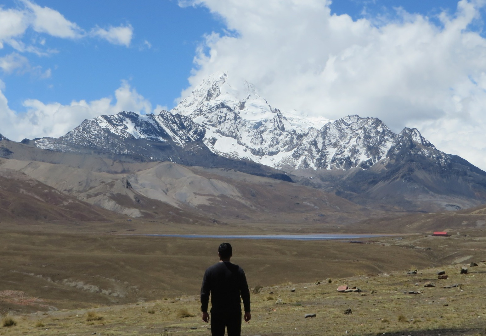
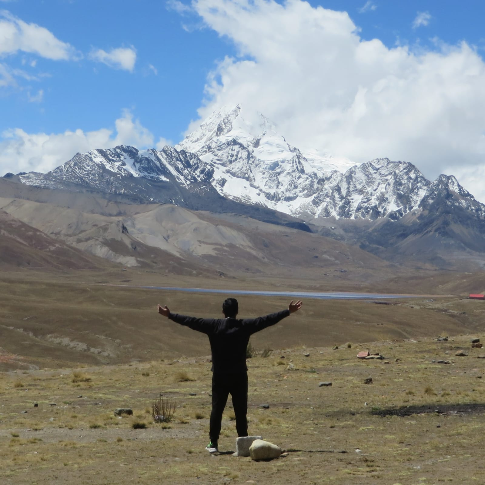
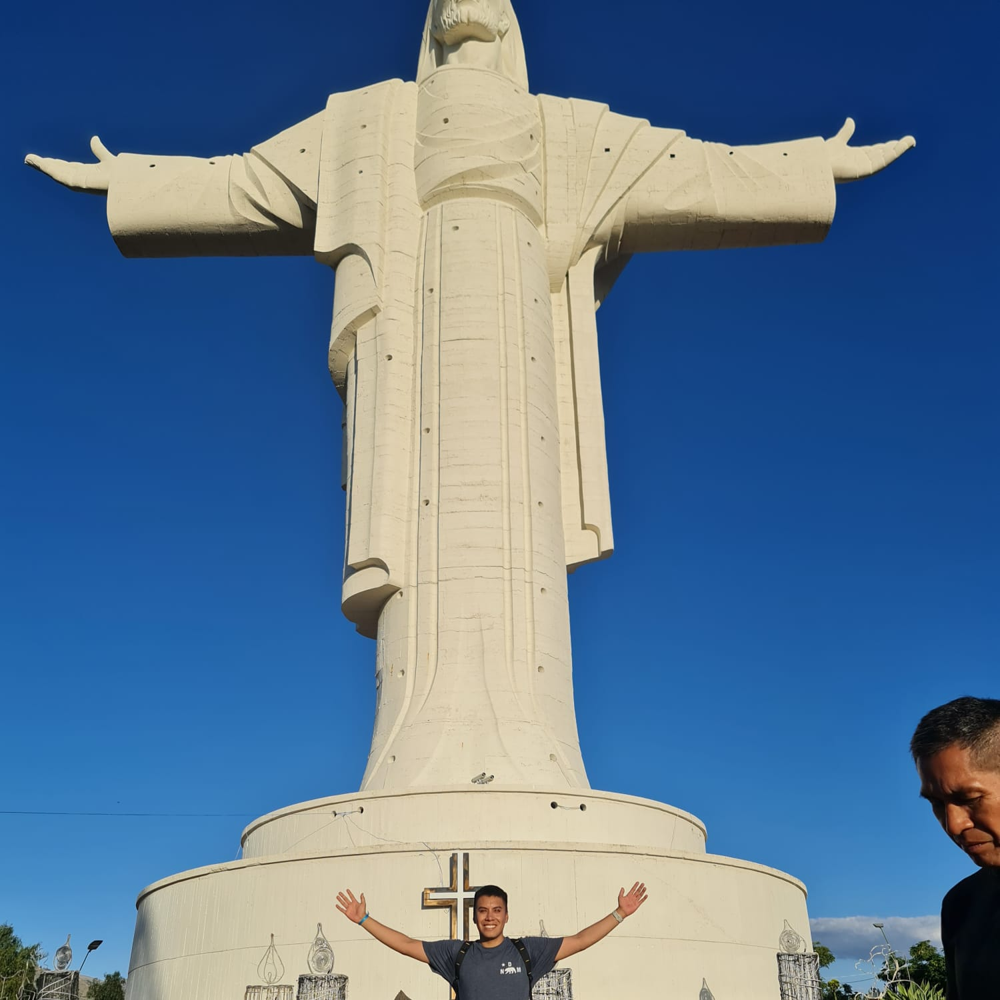
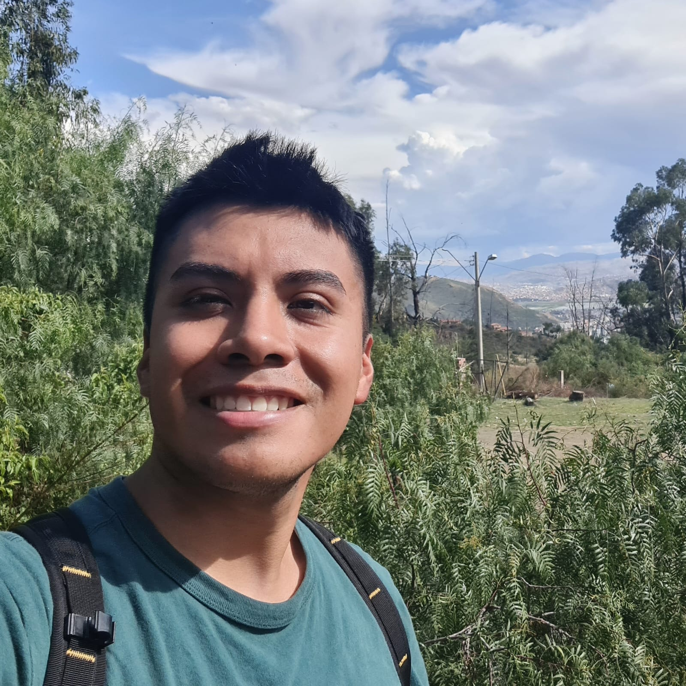
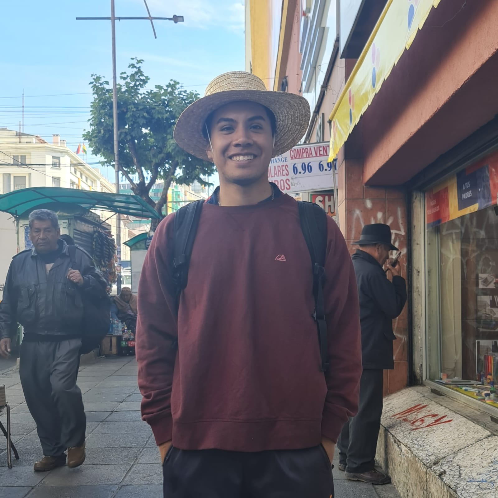

I’m Marco from Bolivia. I want to live a life I won’t regret and be a free man. If you’re a fan of One Piece, you probably know who inspired me to seek adventure and follow my own path. Join me on this adventure!


Cycling adventure to a mountain at 5,430 meters above sea level.

Cycling adventure to the biggest statue of Christ in South America.

Cycling adventure to the base of Tunari Park in Cochabamba, Bolivia.

I promised that once I got to the Wano arc in One Piece, he would buy Luffy’s hat.
If a man is persevering, even though he is hard of understanding, he will become intelligent; and even if he is weak, he will become strong.
© 2026 Marco Pérez. All rights reserved.